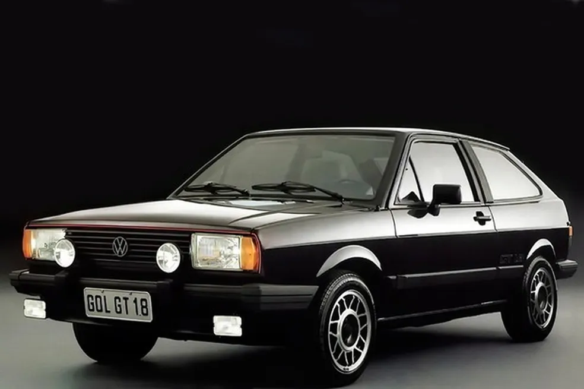

Um dos maiores esportivos da história automobilística brasileira

Modelo 1989 • Primeira geração
"O esportivo que colocou a injeção eletrônica nos carros nacionais."
AP 2.0 8V
120 cv
18,35 kgfm
Manual de 5 marchas
Dianteira
10,4 segundos
174,3 km/h
O Volkswagen Gol GTi foi apresentado no Salão do Automóvel de São Paulo em 1988 e chegou ao mercado como modelo 1989.
A Volkswagen criou o GTi para transformar o Gol em uma versão esportiva de alto desempenho dentro da linha nacional.
O grande destaque foi o motor AP-2000 de 2,0 litros, equipado com injeção eletrônica Bosch LE-Jetronic.
O Gol GTi entrou para a história por ser o primeiro automóvel nacional equipado com injeção eletrônica.
Em 1991, o modelo recebeu uma reestilização com mudanças nos faróis, capô e rodas. A primeira geração do GTi continuou até 1994.
Foi o primeiro carro nacional com injeção eletrônica.
O motor AP-2000 era derivado do motor utilizado no Santana.
O GTi de 1989 era vendido somente com gasolina.
Os primeiros exemplares tinham pintura exclusiva Azul Mônaco.
O interior utilizava bancos esportivos Recaro.
A injeção eletrônica Bosch LE-Jetronic era uma grande novidade nos carros brasileiros.
O motor de 2 litros entregava 120 cv e 18,35 kgfm de torque.
Aerofólio, rodas esportivas, lanternas fumê e detalhes exclusivos diferenciavam o GTi.
Bancos Recaro, volante de couro e iluminação vermelha davam personalidade ao interior.
O GTi marcou uma mudança tecnológica importante na indústria automobilística brasileira.
A produção inicial do Gol GTi foi limitada a cerca de 2.000 unidades em 1989.
O modelo se tornou um dos esportivos mais marcantes do Brasil por reunir o motor AP 2.0, desempenho esportivo e uma tecnologia inédita nos carros nacionais: a injeção eletrônica.
O Gol GTi 1989 representa uma parte importante da evolução tecnológica e da história dos carros esportivos brasileiros.
Quatro Rodas — História e ficha técnica do Gol GTi
Motor1 — História do Volkswagen Gol GTi